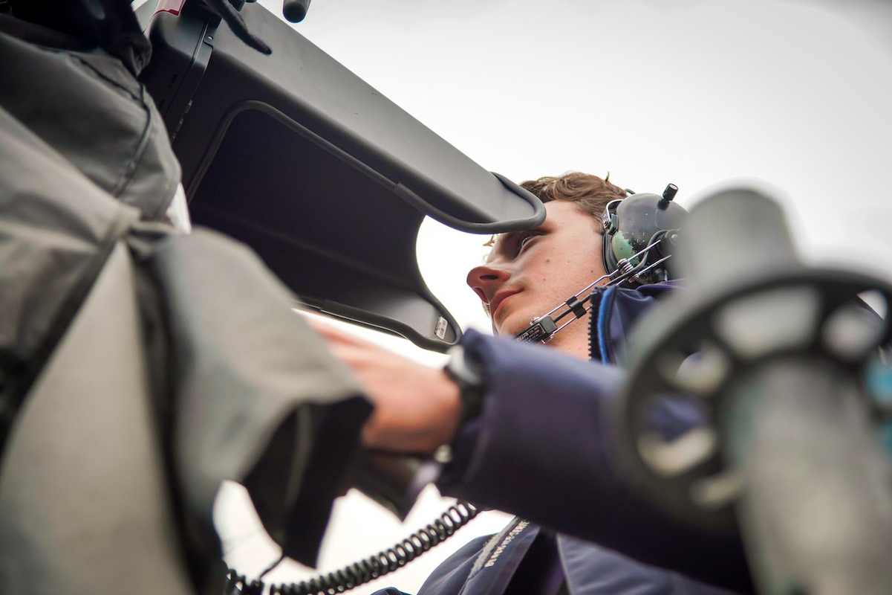

Met meer dan 10 jaar ervaring als cameraman, werk ik als zzp'er in de televisie-industrie. Mijn passie ligt bij het vertellen van verhalen en het vastleggen van momenten die raken.
Wil je samenwerken of heb je vragen? Neem gerust contact op!